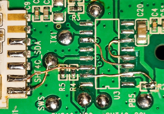
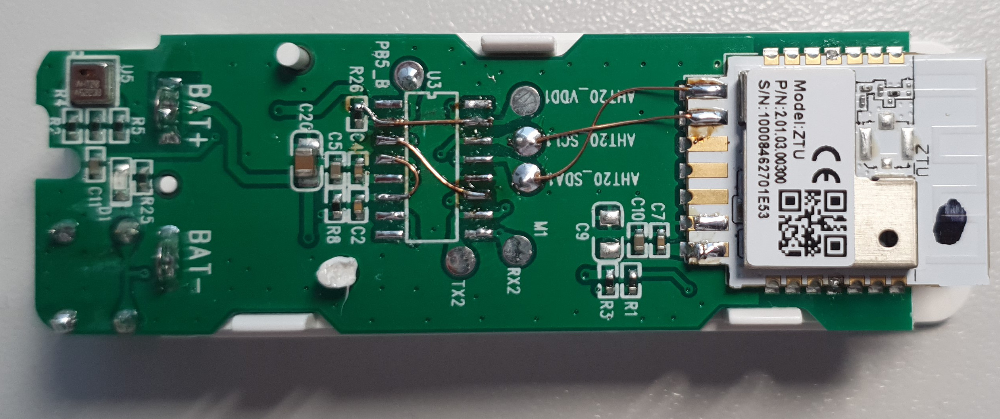

TS0601 (_TZE200_..): Tuya ZigBee ZTH01

Module ZTU, Sensor: AHT30, Chip (Tuya MCU) SO-16 - ?

Removing a useless chip (Tuya MCU)
Custom firmware BLE, Zigbee| GPIO_PB4 | KEY |
| GPIO_PB5 | LED |
| GPIO_PC2 | SDA |
| GPIO_PC3 | SCL |
Modification:

Another ZTH01:

FullFlash bin